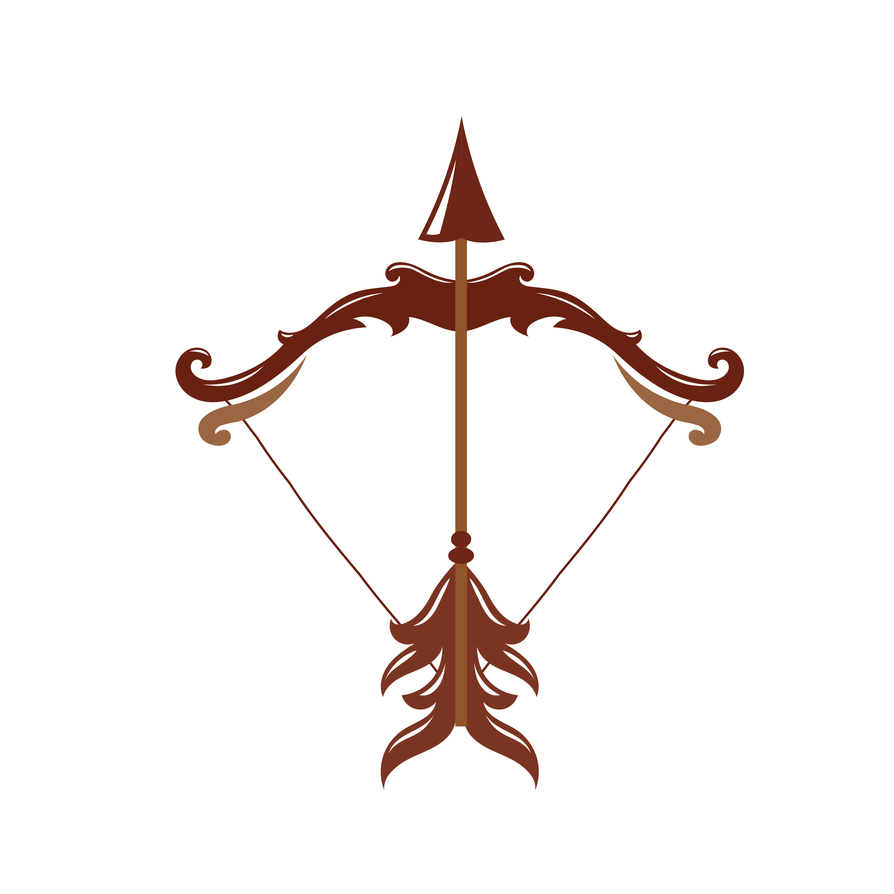
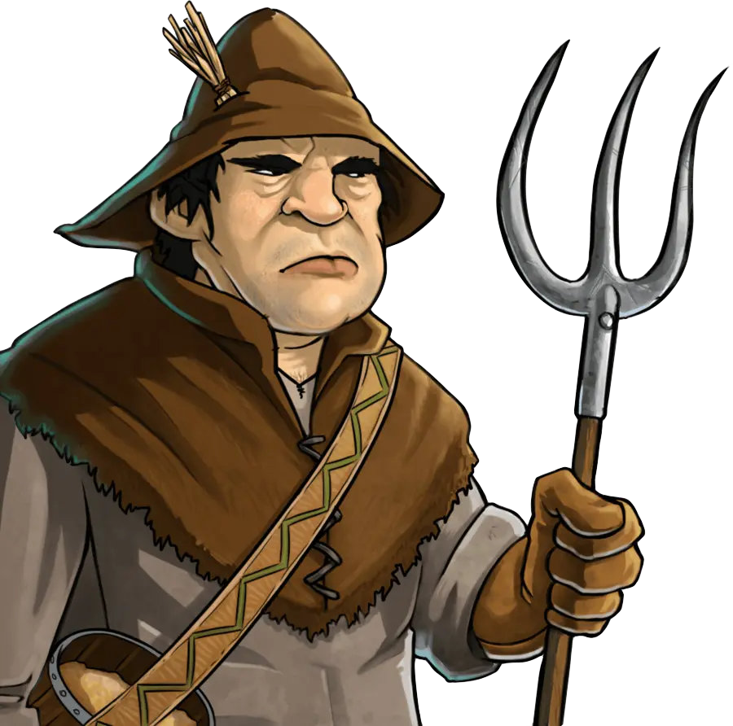
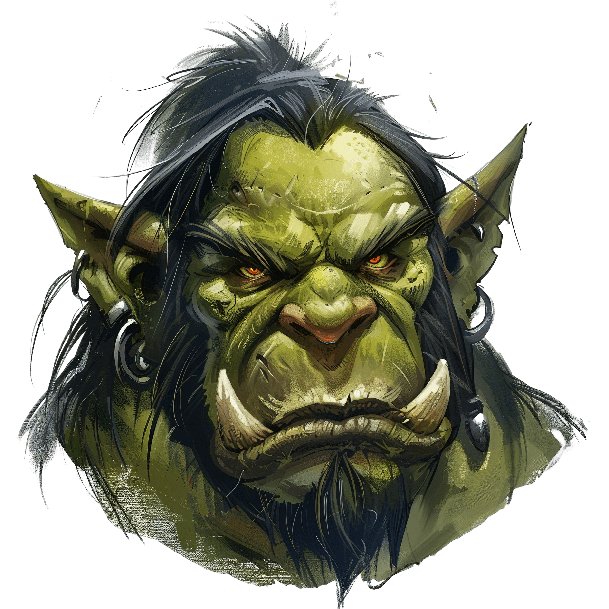

Desarollo
En un primer lugar, se nos fue encomendada la tarea de realizar una aventura gráfica, al estilo de los libros elige tu propia aventura. Esta misma tenía que basarse en un videojuego que haya sido llevado al cine.
Tras mucha deliberación y después de que algunos títulos nos fuesen usurpados vilmente, elegimos la película de Warcraft: El primer encuentro de dos mundos.
Pensamos que el mundo de Azeroth y los hechos que llevaron al comienzo del conflicto entre La horda y La Alianza sería un tema muy interesante sobre el que trabajar.
Una vez elegido nuestro tema, tuvimos que diagramar el flujo de la historia de nuestra aventura y los distintos caminos que uno podría recorrer en ella.

El mundo
El mundo de Azeroth es una tierra repleta de magia y misterios. Habitada por cientos de diferentes razas que la llaman su hogar, cientos de distintos reinos se en alzado y caído en ella.
Y ahora, Ventormenta, quizás el más grande entre todos los reinos de los hombres se encuentra ante su mayor desafío. Un portal se ha abierto en lo más profundo de su reino, y de él, invasores bestiales salen por cientos de miles. Buscando reclamar una tierra que no les pertenece.
Orcos, gigantes tribales, escapan de un mundo moribundo bajo la influencia de amos oscuros. No tienen hogar al que volver y buscan reclamar uno nuevo a través de la guerra.
Mas el reino gobernado por el linaje Wrynn es duro, y sus legiones están bajo el mando de Anduin Lothar, ultimo descendiente del linaje de los Arathi y campeón del reino.
Una tormenta como ninguna otra asolara el reino, y Ventormenta la enfrentara.
El juego
Se nos fue encargado la realización de un juego de desplazamiento lateral en el que el jugador debe defender a los personajes en el suelo de ser capturados por enemigos alienígenas. Uno debe disparar a los alienígenas y rescatar a los personajes secuestrados antes de que sean llevados fuera de la pantalla.
Tuvimos que adaptar esta consigna a nuestra temática elegida, y debía ser en una situación que podría llevarse a cabo dentro de la aventura gráfica.
Con esto en mente, se pensó en una situación en la que durante una batalla contra los orcos. Estos estarían intentando secuestrar aldeanos y nosotros tendíamos que detenerlos con nuestras flechas.
El resultado final es una mezcla entre el clásico de 1981 "DEFENDER" y el mítico "SPACE INVADERS" de 1978.
Julian se encargó de realizar menú del juego y sus pantallas mientras que Mateo programo el juego en sí y se encargó del apartado visual.
 Se mueve de izquierda a derecha con las flechas direccionales y dispara sus flechas con enter.
 Se mueven aleatoriamente de izquierda a derecha en la parte inferior de la pantalla hasta que son capturados por un enemigo.
 Aparecen en la parte superior de la pantalla y se desplazan hasta abajo. Cuando chocan con un aldeano lo capturan e intentan llevárselo hacia arriba. mueren de un disparo.
La aventura grafica
El juego debía estar incluido en uno de los puntos de conflicto de una aventura gráfica, sin embargo, esto no está implementado por el momento.
En la aventura, el jugador toma el papel de Anduin Lothar durante los sucesos de la primera apertura del portal oscuro. Dependerá de ti responder a la amenaza y defender Ventormenta.
Desarolladores
Programador principal, interesado en el desarollo de videojuegos.
Estudiante de la carrera de Diseño Multimedial
Estableció el contenido y estructura de la página Web.